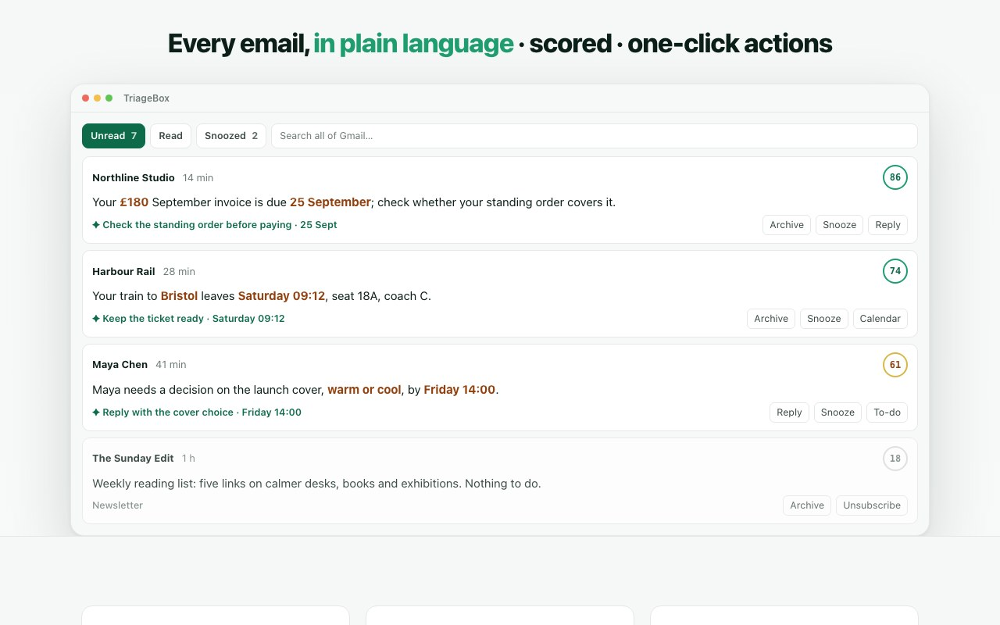

Guide reviewed . The live Chrome Web Store listing for TriageBox is 1.93. See the changelog for what shipped.
Cleanup · Stop promotions · Desktop Chrome
Stop promotional emails in Gmail — sweep Promotions with the count in front of you
TriageBox’s Bulk sweep targets Promotions (also Social, Updates, or Forums) with one Gmail query, shows a live exact count, then archives or deletes. Unsubscribe on cards uses RFC 8058 one-click when present. Labels, filters, and mute sort or hide — they do not clear the promotional pile with a counted sweep. No API key for core unsub or sweep. AI optional. No TriageBox mailbox server.
This is not Gmail’s Promotions tab alone, not a label/filter/mute workflow, and not per-exact-sender bulk unsubscribe, delete old emails by age, or Spam folder review.
CWS 1.93 · Add to Chrome → Google consent → pin the badge · Promotions sweep & unsub need no AI key

Gmail already sorts promotions
Use Gmail if the tab, a label, a filter, or mute is enough. Use TriageBox if you want a counted Promotions sweep and RFC 8058 unsub on cards.
Gmail’s Promotions tab is free and correct — it sorts marketing mail. Labels file it; filters auto-label or skip the inbox; mute hides a conversation (or one sender into TriageBox’s Muted tab). All of that helps organize noise. None of it is Bulk sweep Promotions: one query, a live exact count, then archive or delete the category pile, plus Unsubscribe on cards when the List-Unsubscribe header is there. Review Google's sign-in and permission prompts before connecting.
Same mailbox, different job
Gmail Promotions / labels / filters / mute vs TriageBox
Facts from Gmail’s categories and filters and from the live Chrome Web Store listing for TriageBox 1.93. No invented ratings.
| What you need | Gmail (tab / labels / filters / mute) | TriageBox |
|---|---|---|
| Clear Promotions (or Social/Updates/Forums) | Open the tab · select · archive/delete — or a filter that skips the inbox | Bulk sweep → Categories & age — one query, live exact count, then archive or delete |
| See how many before anything moves | Estimate from the list; large selects use “Select all conversations that match” | Live exact count; Cap marked 20,000+ when capped; optional Count all mail |
| Hide marketing without moving it | Stay on Primary · labels · filters · mute conversation | Normal mail only (mail icon before Triage) — filters the displayed list only; does not archive/delete. Mute sender is a different page |
| Stop the next newsletter | Unsubscribe link in the message / Manage subscriptions | Unsubscribe on the card: RFC 8058 one-click when present; preference/mailto for manual review; AI link extract last resort |
| Per exact sender, then leftover sweep | — | That is bulk unsubscribe Gmail — different page |
| On your phone | Gmail app | Desktop Chrome only |
TriageBox is not affiliated with Google. Gmail, Google and Chrome are trademarks of Google LLC. Bulk sweep does not empty Spam — that is spam review. Age-first cleanup is delete old emails. There is no TriageBox mailbox server and no AI key required for core unsub or sweep.
Store 1.93 · no API key for core unsub/sweep
How stopping promotions actually runs
Add to Chrome installs this product, not the in-extension nightly log. These are the steps on a signed-in Gmail account you are authorised to use.
- Install and connect Gmail. Desktop Chrome. Google shows the account and permissions you are authorizing. No TriageBox account.
- Bulk sweep → Categories & age. Pick Promotions (or Social / Updates / Forums). One Gmail query. Live exact count before archive or delete. Scoped like inbox mode; can Count all mail instead. Cap marked as 20,000+ when capped.
- Optional: Normal mail only. Mail icon before Triage hides newsletters, offers, social/forum mail and messages scored below 45. Filters the displayed list only — does not archive or delete.
- Unsubscribe on cards. RFC 8058 one-click when present (no confirmation from the sender). Preference or mailto shown for manual review. AI link extract is last resort. Unsubscribe view in Triage: senders you swept stay listed until you unsubscribe or dismiss; searches the whole mailbox including Trash.
Count, then move
Promotions (and other categories) with a live exact count. Cap marked 20,000+ when capped.
Normal mail only
Quieter list. Hides marketing-shaped mail from view — does not archive or delete it.
Unsubscribe on the card
RFC 8058 one-click when the header is there. Preference/mailto when it is not. No AI key for the core path.
Not labels, filters, or mute
Those organize or hide. This page is the counted Promotions sweep. Exact-sender leftover cleanup lives on bulk unsubscribe Gmail.
Count first. Sweep second.
Clear Promotions with the number in front of you
Bulk unsubscribe & archive, scam checks. No API key. AI optional.
Limits, stated
What this page does not claim
- It does not replace Gmail’s Promotions tab, labels, filters, or mute. Those still work, for free, with no extension.
- It is not bulk unsubscribe Gmail — that page is per exact sender, then leftover sweep.
- It is not delete old emails — that page is age-first cleanup.
- It is not Gmail spam review — that page is the Spam folder.
- It is not mute sender — that page hides one address into the Muted tab.
- Normal mail only does not archive or delete — it only filters the displayed list.
- Core unsubscribe and sweep do not require an AI key. AI link extract is last resort only.
- There is no TriageBox mailbox server. Desktop Chrome only.
- It is not for anyone else’s mailbox.
Quick answers
Stop promotional emails in Gmail
How do I stop promotional emails in Gmail without opening every message?
Gmail’s Promotions tab, labels, filters, and mute sort or hide marketing mail — they do not bulk-clear the pile with a live count. TriageBox is a Chrome extension: Bulk sweep can target Promotions (also Social, Updates, or Forums) with one Gmail query, show a live exact count, then archive or delete. Cap is marked 20,000+ when capped. You can Count all mail instead. Unsubscribe on cards uses RFC 8058 one-click when present. No AI key for core unsub or sweep. No TriageBox mailbox server. Desktop Chrome only.
Are Gmail labels, filters, or mute enough to stop promotions?
They help for sorting and hiding. Labels file mail; filters auto-label or skip the inbox; mute hides a conversation (or, in TriageBox, one sender into the Muted tab). None of those is Bulk sweep Promotions: one query, a live exact count, then archive or delete the category pile, plus RFC 8058 unsubscribe on cards when the header is there.
What does Normal mail only do?
The Normal mail only toggle (mail icon before Triage) hides newsletters, offers, social/forum mail and messages scored below 45 from the displayed list. It does not archive or delete — it filters what you see. Turn it off to see the full pile again. That is list filtering, not a Promotions sweep.
Is this the same as bulk unsubscribe Gmail?
No. Bulk unsubscribe is per exact sender, then a leftover sweep. This page is the promotional angle: category/age bulk sweep, Normal mail only, and Unsubscribe on cards. Use delete old emails for age-first cleanup and spam review for the Spam folder.
Does my mail go through a TriageBox server?
No. There is no TriageBox mailbox backend. The separate public support service counts anonymous likes; it receives no Gmail content. Processing runs in your browser; Gmail data is not sent to the publisher. Optional AI requests go from your browser to the provider whose key you added.
Desktop Chrome · Gmail you already have
Sweep Promotions with the count first — not labels, filters, or mute.
Bulk unsubscribe & archive, scam checks. No API key. AI optional. Free to install — no TriageBox account.